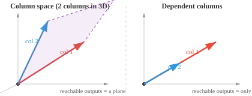
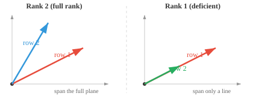
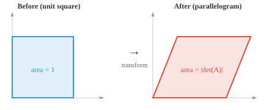
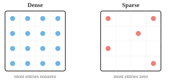
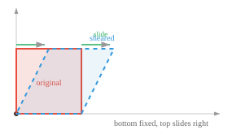
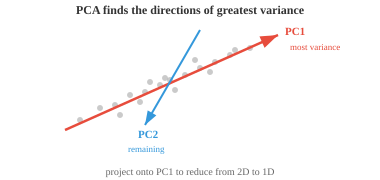

Maths, CS & AI Compendium · Chapter 02
Matrices as Machines
Chapter 01 asked what a vector is. This one asks what happens when something acts on it. You have been feeding vectors into matrices since second year: hand a stress tensor a plane and it returns a traction, hand an inertia tensor a spin and it returns angular momentum, hand a stiffness matrix a displacement and it returns a force.
That is the whole idea. A matrix is a machine with a vector-shaped input slot and a vector-shaped output chute. Everything in this chapter — rank, determinant, eigenvectors, SVD — is a question about what a particular machine does to the things you put in it. And you have physical names for nearly all of the answers already: a singular matrix is a mechanism, an eigenvector is a principal axis, a null space is a set of rigid-body modes.
One warning up front. This chapter is where the mechanical picture is most seductive and most dangerous, because ML uses the word "matrix" for two genuinely different things. §02 separates them before the confusion can set in.
The bridge
Chapter 01's table had one row that did not survive the crossing. This chapter's table has almost none — matrices carry over far better than vectors did, because the matrices of mechanics and the matrices of ML are doing the same structural job. The danger here is not that the analogy fails; it is that it works so well you stop checking.
| What you already use | What ML calls it | How good is the match? |
|---|---|---|
| Traction on a plane, \(\mathbf{t}=\boldsymbol{\sigma}\hat{\mathbf{n}}\) | Matrix–vector product \(A\mathbf{x}\) | Identical. The canonical "matrix eats a vector". |
| Principal stress planes (no shear) | Eigenvectors | Exact. "No shear" is \(\boldsymbol{\sigma}\hat{\mathbf{n}}=\lambda\hat{\mathbf{n}}\). |
| Principal axes of inertia, rotor balancing | Eigenvectors of a symmetric matrix | Exact. Imbalance is \(\mathbf{H}\nparallel\boldsymbol{\omega}\). |
| Mode shapes & natural frequencies | Eigendecomposition | Exact, in generalised form \(K\boldsymbol{\phi}=\omega^2M\boldsymbol{\phi}\). |
| Rigid-body modes of an unconstrained FEM mesh | Null space, rank–nullity | Exact. Best physical picture of nullity there is. |
| Strain energy \(U=\tfrac12\mathbf{u}^TK\mathbf{u}>0\) | Positive definiteness | Exact. Stability is the quadratic form. |
| Polar decomposition \(F=RU\) of the deformation gradient | SVD | Exact. The strain ellipse is the SVD picture. |
| Cholesky solve of \(K\mathbf{u}=\mathbf{F}\) in FEM | Cholesky decomposition | The same algorithm, same reason. |
| Robot arm at a singular configuration | Singular matrix, \(\det=0\) | Exact. Lost degree of freedom is rank loss. |
| Stress tensor rotating as \(\boldsymbol{\sigma}'=R\boldsymbol{\sigma}R^T\) | A data matrix \(X\) | Not the same kind of object. See §02. |
A matrix is a machine
src 01 + 03The single most useful way to read \(A\mathbf{x}\) is as a weighted sum of the columns of \(A\), with the entries of \(\mathbf{x}\) supplying the weights:
Read it that way and two facts become obvious rather than memorised. The set of all reachable outputs is whatever the columns can build between them — the column space. And if the columns are not independent, some inputs get mapped to the same output, information is lost, and the machine cannot be run backwards.
Cauchy stress. Hand the stress tensor a unit normal and it returns the traction vector acting on that plane: \(\mathbf{t}=\boldsymbol{\sigma}\hat{\mathbf{n}}\). Nine numbers encode the force state on every plane through the point. That is a matrix as a machine, exactly.
Rotational inertia. Hand the inertia tensor an angular velocity and it returns angular momentum: \(\mathbf{H}=I\boldsymbol{\omega}\). Note what this says — \(\mathbf{H}\) need not point along \(\boldsymbol{\omega}\). §07 shows that the directions where it does are the eigenvectors, and that this is the entire theory of rotor balancing.
Stiffness. Hand the stiffness matrix a displacement vector and it returns the nodal force vector: \(\mathbf{F}=K\mathbf{u}\). A neural network layer computes \(W\mathbf{x}+\mathbf{b}\). Structurally, that is a stiffness relation with a preload.
So when the compendium says every neural network layer computes \(A\mathbf{x}+\mathbf{b}\), you can picture it concretely: a very large, rectangular, non-symmetric stiffness matrix whose entries were not derived from geometry and material properties but fitted from data. That last difference is real, and §02 is about it.

Two different things called "matrix"
src 01. propertiesThe source chapter opens with a matrix of three people — each row a person, each column a feature — and later uses matrices as transformations. Both are standard. But they are not the same kind of object, and conflating them is the most common conceptual error a newcomer makes.
| Operator matrix | Data matrix | |
|---|---|---|
| Example | \(\boldsymbol{\sigma}\), \(I\), \(K\), \(R\), a layer's \(W\) | \(X\): 3 people × 3 features |
| What a row means | One output coordinate | One sample |
| What a column means | Where one input basis vector lands | One feature |
| Reorder the rows? | Changes the transformation | Harmless — sample order carries no meaning |
| Does \(A^2\) mean anything? | Yes — apply it twice | No. Usually not even conformable |
| Under a rotation \(R\) | Tensor: \(\boldsymbol{\sigma}'=R\boldsymbol{\sigma}R^T\) | Nothing. There is no rotation to apply |
Every stress tensor is a matrix, but not every matrix is a tensor. What makes \(\boldsymbol{\sigma}\) a tensor is not its shape — it is that its components obey a transformation law when you change frame:
This law is what guarantees the physics is frame-independent: two engineers using differently-oriented axes compute the same principal stresses and the same factor of safety. It is also what Mohr's circle is a graphical solution of.
A data matrix obeys no such law. Its rows are people and its columns are height and mass; there is no rotation to apply and no invariant to preserve. This is Chapter 01's units warning, escalated: in mechanics your matrices carried physical structure that constrained what operations were meaningful. In ML that structure is usually absent, so the arithmetic will happily compute things that mean nothing. The mathematics will not stop you. You have to.
Properties, and what each one tells you
src 01. propertiesEach property below answers a specific question about the machine. Learn the question, not the formula.
Rank — how much of the input survives
The rank is the number of linearly independent rows, which always equals the number of linearly independent columns. It is the dimension of the column space: how many genuinely distinct directions the machine can still produce on the way out.
The null space is everything sent to zero, and the two are tied together by the rank–nullity theorem:
What the machine keeps, plus what it destroys, equals what you gave it.
Assemble a finite element mesh and, before you apply any boundary conditions, the global stiffness matrix \(K\) is singular. Every FEM course mentions this; few explain it. The reason is that an unsupported structure can translate and rotate freely, and those motions produce no strain, hence no force:
The rigid-body modes are the null space of \(K\) — three of them in 2-D (two translations, one rotation), six in 3-D. So \(\operatorname{rank}(K)=n-3\) or \(n-6\), and the nullity is a number you can count off the physics before ever running the solver. Applying enough constraints removes the null space, and \(K\) becomes invertible and positive definite. If your solver reports a singular stiffness matrix, it is telling you the structure is a mechanism.

Determinant — the volume scale factor
For a \(2\times2\) matrix, \(\det\begin{bmatrix}a&b\\c&d\end{bmatrix}=ad-bc\) is the area of the parallelogram the unit square becomes. Positive preserves orientation, negative flips it, and zero means space has been flattened into a lower dimension.
The isoparametric Jacobian. In FEM you map a parent element to a distorted real element, and the integration carries a factor \(\det J\). Every textbook warns that \(\det J\) must stay positive throughout the element; if it goes to zero or negative, the element has folded and the results are garbage. That warning is exactly "a zero determinant means the map collapsed and cannot be inverted".
Robot singularities. For a manipulator, \(\mathbf{v}=J\dot{\mathbf{q}}\). At a configuration where \(\det J=0\) — an arm stretched straight, say — the machine loses a degree of freedom: there is a direction the end effector simply cannot move in, no matter what the joints do. That lost direction is the collapsed dimension of the column space.

Trace, norms, conditioning
The trace is the sum of the diagonal, and it equals the sum of the eigenvalues. Crucially it is basis-independent: two matrices representing the same transformation in different bases have the same trace. In mechanics you have used this without naming it — the first stress invariant \(I_1=\sigma_x+\sigma_y+\sigma_z\) is the trace of the stress tensor, and it is invariant precisely because trace is. Hydrostatic pressure is \(-I_1/3\).
The Frobenius norm treats the matrix as one long vector, \(\|A\|_F=\sqrt{\sum_{ij}A_{ij}^2}\); the spectral norm \(\|A\|_2\) is the largest singular value, the most the machine can stretch any unit input. The condition number combines them:
A well-conditioned matrix has \(\kappa\) near 1; an ill-conditioned one amplifies tiny input errors enormously. You have met this as element distortion: a long sliver-shaped element drives \(\kappa(K)\) up and the solution becomes round-off noise. The same number appears in robotics as a dexterity measure, and in ML as a diagnosis of why training is unstable.
Positive definiteness — stability
A symmetric \(A\) is positive definite when \(\mathbf{x}^TA\mathbf{x}>0\) for every non-zero \(\mathbf{x}\), and positive semi-definite when \(\ge 0\) is allowed.
The strain energy stored by a displacement \(\mathbf{u}\) is \(U=\tfrac12\mathbf{u}^TK\mathbf{u}\). Requiring \(U>0\) for every non-zero displacement — you cannot deform a stable structure and get energy out — is literally the definition of positive definiteness. A positive definite \(K\) means a stable equilibrium with a unique minimum-energy configuration; a semi-definite one means some direction costs no energy, which is a rigid-body mode or a buckling mode at its critical load. When ML says a positive definite Hessian guarantees a unique minimum, it is making the same statement about the same kind of object.
The matrix zoo
src 02. matrix typesSpecial structure buys speed, guarantees, or both. The source chapter lists the types; the column that matters for you is the third one, because in almost every case you have already met the animal in the wild.
| Type | Defining property | Where you have already met it |
|---|---|---|
| Identity | \(AI=IA=A\) | The "do nothing" transform; the target of \(Q^TQ\) |
| Diagonal | Off-diagonal all zero | Inertia tensor written in principal axes — no products of inertia |
| Symmetric | \(A=A^T\) | Stress, strain, inertia, stiffness. \(K\) is symmetric by Maxwell–Betti reciprocity |
| Triangular | Zeros one side of the diagonal | What Gaussian elimination leaves you; solved by back substitution |
| Orthogonal | \(Q^TQ=I\), so \(Q^{-1}=Q^T\) | The direction cosine matrix of a rotated frame. Rigid, length-preserving |
| Positive definite | \(\mathbf{x}^TA\mathbf{x}>0\) | A properly constrained stiffness matrix. Strain energy is positive |
| Sparse | Mostly zeros | Global FEM stiffness — each node couples only to its neighbours |
| Permutation | A shuffled identity | Row swaps during pivoting; node renumbering to reduce bandwidth |
| Toeplitz | Constant along each diagonal | Sliding a fixed filter along a signal — i.e. convolution |
| Circulant | Each row a cyclic shift of the one above | Cyclically symmetric structures — a bladed turbine disk, solved by DFT |
| Idempotent | \(A^2=A\) | A projection. Projecting twice changes nothing |
| Vandermonde | Consecutive powers of a value set | Polynomial interpolation — deriving element shape functions |
| Boolean / adjacency | Only 0s and 1s | The element–node connectivity table of a mesh; a graph's edges |
| Hessenberg | Almost triangular | A staging post inside eigenvalue algorithms |

Operations, and what they cost
src 03. operationsMatrix multiplication \(C=AB\) puts a dot product in every cell: \(C_{ij}=\sum_k A_{ik}B_{kj}\). Inner dimensions must match; the result takes the outer ones. It is associative and distributive, but not commutative — which you already accept, because rotating a part and then translating it is not the same as translating then rotating.
The outer product, and why it is the whole of SVD
An outer product \(\mathbf{u}\mathbf{v}^T\) turns two vectors into a matrix, and the result always has rank 1 — every row is a scaled copy of \(\mathbf{v}^T\).
Take a plane truss bar with direction cosines \((c,s)\), area \(A\), length \(L\). Its element stiffness matrix in global coordinates is
That is an outer product, so \(k_e\) has rank 1 — a single bar resists motion along exactly one direction and is blind to everything else. Assembling the global stiffness matrix is summing one rank-1 contribution per bar. SVD runs this construction backwards: hand it any matrix and it returns the best rank-1 pieces to build it from, in order of importance. You already know the forward direction.
Cost
Multiplying two \(n\times n\) matrices naively takes \(O(n^3)\) operations. For the \(4096\times4096\) matrices inside a large language model that is roughly \(1.4\times10^{11}\) floating-point operations for a single layer's single multiply. This is the entire reason GPUs exist in machine learning: the operation is enormous, perfectly regular, and embarrassingly parallel.
When a matrix is sparse, naive multiplication wastes nearly all its effort on zeros. Compressed Sparse Row stores only the nonzeros with their positions — values, column indices, and row offsets. A banded FEM solver is the same idea, arrived at independently by structural engineers decades earlier.
For solving \(A\mathbf{x}=\mathbf{b}\), note what the source chapter says and take it seriously: do not compute the inverse. Forming \(A^{-1}\) is expensive and numerically poor. Factor instead, which is §08.
Every matrix is a transformation
src 04. transformationsThe key to reading any matrix by eye: its columns tell you where the basis vectors land. For \(A=\begin{bmatrix}2&1\\1&2\end{bmatrix}\), \(\hat{\mathbf{i}}\) goes to \((2,1)\) and \(\hat{\mathbf{j}}\) goes to \((1,2)\). Linearity fixes everything else.
Drag those two landing points below and watch the machine change character. Everything in §03 is displayed live, including the eigenvectors from §07.
Four named transformations account for most of what you will see. Note their determinants, which tell you what each does to volume and orientation:
| Transformation | Matrix | det | Effect |
|---|---|---|---|
| Rotation by \(\theta\) | [[cosθ, −sinθ], [sinθ, cosθ]] | +1 | Rigid. Lengths and angles preserved |
| Scaling | [[sₓ, 0], [0, sᵧ]] | sₓsᵧ | Stretch per axis. Diagonal is always scaling |
| Reflection | [[1, 0], [0, −1]] | −1 | Rigid but orientation-flipping |
| Shear by \(k\) | [[1, k], [0, 1]] | +1 | Slides layers. Area unchanged |

Rotation, scaling, reflection and shear all hold the origin fixed. Translation does not, so it is not a linear transformation — shift everything right by 3 and the zero vector moves to \((3,0)\), which no matrix can do. The fix is homogeneous coordinates: append a 1 to every vector and work with an \((n{+}1)\times(n{+}1)\) matrix,
If you have seen Denavit–Hartenberg matrices in kinematics, you have used this exact trick: the \(4\times4\) transform that carries one joint frame to the next is a rotation block plus a translation column plus a bottom row of \((0,0,0,1)\). It is also why a neural network layer is written \(W\mathbf{x}+\mathbf{b}\) — the bias \(\mathbf{b}\) is a translation, and the layer is affine rather than linear.
Eigenvectors: the directions a machine respects
src 05. decompositionsMost vectors come out of a matrix pointing somewhere new. Eigenvectors are the exceptions — the directions the machine only stretches:
The scalar \(\lambda\) is the eigenvalue, the stretch factor. Find them by solving the characteristic equation \(\det(A-\lambda I)=0\), then substitute each root back to get its eigenvector. Two facts worth holding: the trace equals the sum of the eigenvalues, and the determinant equals their product.
For symmetric matrices — which is nearly everything in mechanics — the spectral theorem guarantees that the eigenvalues are real and the eigenvectors are mutually perpendicular. That guarantee is why principal axes are always at right angles, a fact you have used for years without being shown why it must hold.
Principal stresses. A principal plane is one carrying no shear — the traction is purely normal. Written out, "traction parallel to the normal" is \(\boldsymbol{\sigma}\hat{\mathbf{n}}=\lambda\hat{\mathbf{n}}\). The principal stresses are eigenvalues and the principal directions are eigenvectors, exactly. Mohr's circle is a nomogram for the \(2\times2\) case.
Rotor balancing. Angular momentum is \(\mathbf{H}=I\boldsymbol{\omega}\). Spin a rotor about an arbitrary axis and \(\mathbf{H}\) is not parallel to \(\boldsymbol{\omega}\), so \(\mathbf{H}\) sweeps round as the rotor turns, and \(\mathrm{d}\mathbf{H}/\mathrm{d}t\) shows up as a rotating reaction in the bearings. That is dynamic imbalance. It vanishes precisely when \(\boldsymbol{\omega}\) lies along an eigenvector of \(I\) — a principal axis, where the products of inertia are zero. Balancing a rotor is making its spin axis an eigenvector.
Mode shapes. Free vibration of a multi-degree-of-freedom system gives \((K-\omega^2M)\boldsymbol{\phi}=\mathbf{0}\), a generalised eigenvalue problem \(K\boldsymbol{\phi}=\omega^2M\boldsymbol{\phi}\). Natural frequencies come from the eigenvalues, mode shapes are the eigenvectors, and the modes are orthogonal with respect to \(M\) — which is exactly what lets you decouple the equations of motion and solve each mode independently.

Diagonalisation — why anyone bothers
If \(A\) has a full set of independent eigenvectors it can be written \(A=PDP^{-1}\), with \(D\) diagonal and the columns of \(P\) the eigenvectors. In that basis the machine is just independent scaling along each eigen-direction — the coupling is gone.
That is the same move as writing the inertia tensor in principal axes so the products of inertia vanish, and the same move as modal decomposition in vibration, where coupled equations of motion become one independent oscillator per mode. It also makes powers trivial: \(A^{100}=PD^{100}P^{-1}\), and raising a diagonal matrix to a power just raises each entry.
Nearly every matrix in your training was square and symmetric, so you may have absorbed the spectral theorem's guarantees as if they were universal. They are not. A neural network weight matrix might be \(4096\times11008\) — not square, so it has no eigenvalues at all. Even square ML matrices are usually non-symmetric, and then eigenvalues can be complex and eigenvectors need not be orthogonal.
This is exactly why SVD, not eigendecomposition, is the workhorse in machine learning: every matrix of every shape has one.
Decompositions
src 05. decompositionsFactoring a matrix is like factoring a number: \(12=3\times4\) is easier to reason about than 12. The goal is almost always to reach triangular factors, because triangular systems solve instantly by substitution.
LU and Cholesky — the FEM solver you have already run
LU formalises Gaussian elimination as \(A=LU\). To solve \(A\mathbf{x}=\mathbf{b}\), first solve \(L\mathbf{y}=\mathbf{b}\) downward by forward substitution, then \(U\mathbf{x}=\mathbf{y}\) upward by back substitution. Two easy solves instead of one hard one.
When the matrix is symmetric and positive definite — a constrained stiffness matrix, a covariance matrix — Cholesky does better: \(A=LL^T\), about twice as fast and unconditionally stable. If it fails partway, with a negative number under a square root, the matrix was not positive definite, so Cholesky doubles as a stability test.
QR
\(A=QR\) splits any matrix into an orthogonal \(Q\) — pure direction information, rigid, cheap to invert by transposing — and an upper triangular \(R\) carrying the scaling and mixing. Gram–Schmidt builds \(Q\) one column at a time: take a column, subtract its projection onto everything already accepted, normalise what is left. QR drives the standard eigenvalue algorithm and solves least-squares problems, which is how you fit a line through more data points than unknowns.
SVD — and the polar decomposition you already know
Every matrix, any shape, any rank, factors as \(A=U\Sigma V^T\): an input rotation, a stretch along orthogonal axes, an output rotation. Geometrically, every linear transformation maps a circle to an ellipse. The singular values \(\sigma_1\ge\sigma_2\ge\cdots\) are the semi-axes, and the number of nonzero ones is the rank.
Continuum mechanics decomposes the deformation gradient into \(F=RU\): a rotation \(R\) and a symmetric positive definite right stretch tensor \(U\). This polar decomposition separates "how much the material turned" from "how much it actually stretched", which is what lets you define strain that ignores rigid rotation.
SVD is that decomposition. Write \(F=W\Sigma Z^T\); then
The singular values are the principal stretches \(\lambda_1,\lambda_2\), and the circle-to-ellipse drawing in every SVD tutorial is the strain ellipse from your continuum mechanics notes. Same theorem, two vocabularies.

Low-rank approximation
Keep only the \(k\) largest singular values and you get the best possible rank-\(k\) approximation of \(A\) — best in the least-squares sense, guaranteed by the Eckart–Young theorem. That single fact underlies image compression, recommender systems, noise reduction and the LoRA fine-tuning method used on large language models.
Rather than take that on trust, compress something. The panel below runs a real SVD in your browser on a 64×64 drawing of a flange, and rebuilds it from the top \(k\) rank-1 outer products — the same outer products you assemble stiffness matrices from in §05.

Why depth needs a kink
src 04 · correctedThe source chapter closes by saying that today's leading models "almost exclusively pass the data through a bunch of linear transformations, we call these Transformers." The spirit is right — matrix multiplication really is where the arithmetic goes — but taken literally the claim cannot be true, and seeing why is worth more than the claim.
Stack two linear layers. The first sends \(\mathbf{x}\mapsto W_1\mathbf{x}\), the second \(\mathbf{y}\mapsto W_2\mathbf{y}\). Composing them:
Matrix multiplication is associative, so the pair collapses into a single matrix \(W=W_2W_1\). Stack a hundred layers and they collapse to one. A purely linear deep network has exactly the expressive power of a one-layer linear network, no matter how deep or wide — all those parameters buy nothing.
You already believe this result. Put two linear springs in series and the combination is a linear spring, \(1/k_{\text{eq}}=1/k_1+1/k_2\). Add a thousand more and it is still just a linear spring with some other stiffness. Linear elements compose to a linear element; you never get qualitatively new behaviour by stacking them.
Everything genuinely interesting in structural mechanics — plasticity, contact, buckling, large deflection — requires a nonlinearity somewhere: a material law that bends, or a geometry that changes as it loads.
Neural networks solve it the same way, by inserting an element-wise nonlinear function between the matrix multiplications:
With \(\phi\) present, \(W_2\phi(W_1\mathbf{x})\) cannot be rewritten as a single matrix, and depth starts buying real expressive power. The most common choice is ReLU:
Look at that formula again: pass positive values through, return zero for negative ones. That is exactly the constitutive law of a cable that can pull but not push, or of a gap element in contact analysis — carries load one way, goes slack the other. If you have ever run a nonlinear FEM model with tension-only bracing, you have solved a system full of ReLUs. It is the same kink, introduced for the same reason: a piecewise-linear element is the cheapest way to buy genuine nonlinearity.
So what is actually inside a transformer? Matrix multiplications carrying nearly all the arithmetic, yes — but also a softmax inside every attention block, a GELU or similar in every feed-forward block, and layer normalisation throughout. Attention is nonlinear in a second way too: in \(\operatorname{softmax}\!\left(QK^T/\sqrt{d_k}\right)V\) the input appears both in the weights and in the values being weighted, so the block is not even linear before the softmax is applied.
Do not over-correct. The engineering claim behind the source chapter's sentence is accurate and important: well over 90% of the floating-point work in a transformer is matrix multiplication, which is why this chapter matters and why GPUs are built the way they are. The nonlinearities are computationally trivial and functionally essential. Cheap to run, impossible to remove.
One matrix, two readings
Take the matrix from the eigenvector panel and work it completely.
The arithmetic
Trace \(=4+2=6\); determinant \(=4(2)-1.2^2=8-1.44=6.56\). The characteristic equation is \(\lambda^2-6\lambda+6.56=0\), so
Check both invariants: \(\lambda_1+\lambda_2=6.000\) matches the trace, and \(\lambda_1\lambda_2=6.560\) matches the determinant. Eigenvectors follow from \((A-\lambda I)\mathbf{v}=\mathbf{0}\):
They are exactly \(90^\circ\) apart and \(\hat{\mathbf{v}}_1\cdot\hat{\mathbf{v}}_2=0\), as the spectral theorem promises for a symmetric matrix. Both eigenvalues are positive, so \(A\) is positive definite — confirmed independently by Sylvester's criterion, since the leading minors \(4\) and \(6.56\) are both positive. The condition number is \(\kappa=\lambda_1/\lambda_2=3.17\): well conditioned.
| Quantity | Read as an inertia tensor | Read as a covariance matrix |
|---|---|---|
| \(\lambda_1=4.562\) | Larger principal moment of inertia, kg·m² | Variance along the first principal component |
| \(\hat{\mathbf{v}}_1\) at 25.1° | A principal axis — spin here and the bearings stay quiet | PC1 — the direction the data actually varies along |
| \(\lambda_2=1.438\) | Smaller principal moment | Variance along PC2 |
| off-diagonal 1.2 | Product of inertia — the source of imbalance | Covariance — the two features are correlated |
| \(\lambda_1/(\lambda_1{+}\lambda_2)\) | Share of inertia on the major axis: 76.0% | Variance explained by PC1: 76.0% |
| Diagonalising | Choosing principal axes: products of inertia vanish | Running PCA: features become uncorrelated |
If you keep only PC1 you have compressed two features into one and retained 76% of the variance — which is the rank-1 approximation from §08, arrived at from the other direction. And discarding PC2 is the same act as ignoring the minor principal moment: defensible when it is small, destructive when it is not.
Shadow reading
Prompt, close the page, write the full answer, then check. Writing is the part that works.
Q1Why is an unconstrained FEM stiffness matrix singular, and what is its nullity?
Rigid-body motions produce no strain and therefore no force, so \(K\mathbf{u}_{\text{rigid}}=\mathbf{0}\) — those motions are the null space. The nullity is 3 in 2-D (two translations, one rotation) and 6 in 3-D, so \(\operatorname{rank}(K)=n-3\) or \(n-6\). Applying enough boundary conditions removes the null space and makes \(K\) positive definite.
Q2Give two matrices with the same entries whose semantics are completely different.
An operator matrix (stress tensor, stiffness, a layer's \(W\)) versus a data matrix (rows = samples, columns = features). For the operator, reordering rows changes the transformation and \(A^2\) is meaningful; for the data matrix, sample order carries no meaning and \(X^2\) is usually not even conformable. Only the operator obeys a tensor transformation law under a change of frame.
Q3What makes a stress tensor more than "a 3×3 matrix"?
Its components obey \(\boldsymbol{\sigma}'=R\boldsymbol{\sigma}R^T\) under a change of frame. That law is what makes the physics frame-independent — two engineers with different axes get the same principal stresses. A data matrix obeys no such law, so operations that are meaningful on a tensor may be meaningless on it.
Q4State rotor balancing as an eigenvalue statement.
\(\mathbf{H}=I\boldsymbol{\omega}\). Dynamic imbalance is \(\mathbf{H}\) not being parallel to \(\boldsymbol{\omega}\), so \(\mathbf{H}\) sweeps round and the bearings see a rotating reaction. It vanishes exactly when \(I\boldsymbol{\omega}=\lambda\boldsymbol{\omega}\) — when the spin axis is an eigenvector of the inertia tensor, i.e. a principal axis with zero products of inertia.
Q5Why is a truss element's stiffness matrix rank 1, and what does SVD do with that idea?
\(k_e=\frac{EA}{L}\mathbf{b}\mathbf{b}^T\) is an outer product, and every outer product has rank 1 — one bar resists motion along one direction only. Assembling \(K\) sums one rank-1 piece per bar. SVD inverts the process: given any matrix, it returns the best rank-1 outer products to rebuild it from, ordered by importance.
Q6Why is SVD, not eigendecomposition, the workhorse of ML?
Eigendecomposition needs a square matrix, and its clean guarantees (real eigenvalues, orthogonal eigenvectors) need symmetry. ML matrices are typically rectangular — a weight matrix might be \(4096\times11008\) — and rarely symmetric when square. Every matrix of every shape has an SVD, so it always applies.
Q7Connect polar decomposition to SVD.
Polar decomposition splits the deformation gradient as \(F=RU\): rotation times right stretch tensor. Writing \(F=W\Sigma Z^T\) gives \(R=WZ^T\) and \(U=Z\Sigma Z^T\), and \(RU=F\). The singular values are the principal stretches, and the SVD circle-to-ellipse drawing is the strain ellipse.
Q8Why does a hundred-layer purely linear network have the power of one layer?
Matrix multiplication is associative, so \(W_{100}\cdots W_1\mathbf{x}=(W_{100}\cdots W_1)\mathbf{x}=W\mathbf{x}\) — a single matrix. Same reason linear springs in series are still a linear spring. Depth only buys expressive power once a nonlinearity sits between the layers.
Q9What structural element has the same constitutive law as ReLU?
A tension-only member (a cable, slack in compression) or a gap/contact element. \(\phi(z)=\max(0,z)\) passes load one way and returns zero the other — the identical piecewise-linear kink, introduced for the identical reason.
Q10Rank-\(k\) approximation of a \(64\times64\) image: at what \(k\) does compression stop saving anything, and why?
Storing \(k\) triplets costs \(k(64+64+1)=129k\) numbers against 4096, so the saving vanishes near \(k=32\). Beyond that you store more than the original. There is also a qualitative cost: low-rank bases favour axis-aligned structure, so straight features return at low \(k\) while curved, rotationally symmetric ones need many more.
What this chapter feeds
Chapter 03 is calculus, and the bridge is already visible from here. Optimisation means walking downhill on a surface; the local curvature of that surface is a matrix — the Hessian — and everything you now know about eigenvalues, conditioning and positive definiteness becomes a statement about whether gradient descent converges quickly, slowly, or not at all. An ill-conditioned Hessian is a long narrow valley, and it is the same \(\kappa\) that ruined your sliver-shaped elements.
Run the source chapter's coding tasks — particularly the power-iteration one,
which finds the dominant eigenvector in about six lines and shows you that the
"impossible" eigenvalue problem is, computationally, just repeated multiplication. Then
try this: take the inertia tensor of any part you have modelled, feed it to
eigh, and check the principal axes against your CAD package's mass
properties output. They will match, and something will click.
Companion to Chapter 02 — Matrices of the Maths, CS & AI Compendium by Henry Ndubuaku. Figures marked from the compendium are reproduced from the repository. §09 corrects and extends a claim in the source chapter and is marked as such.
Sheet 2 of 20. Built for a mechanical engineer with GATE-level mathematics and no prior CS.